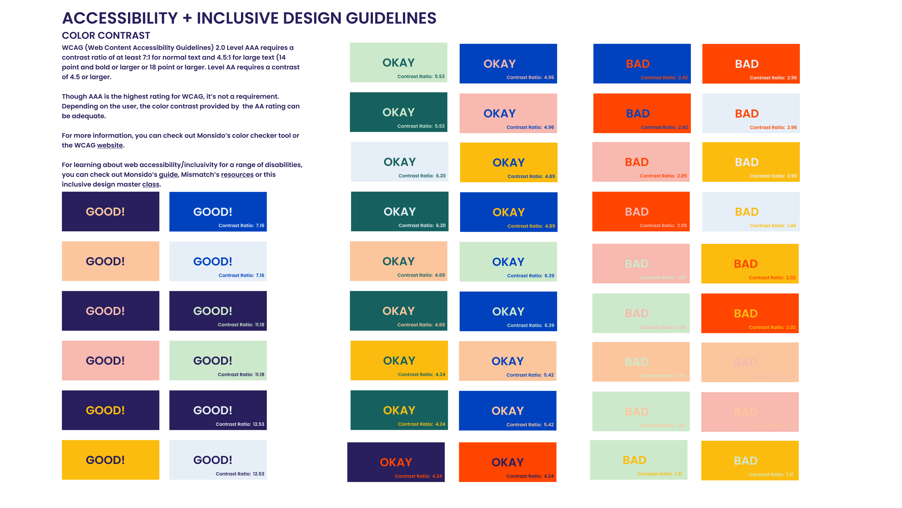
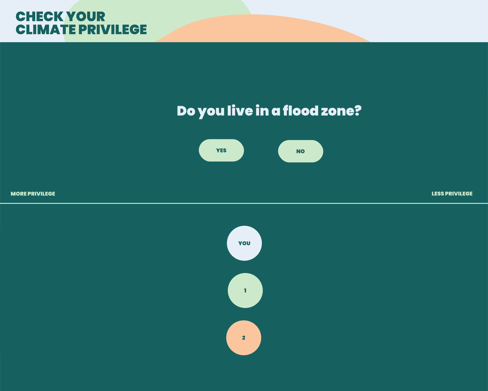

our climate voices
2021
Our Climate Voices is a grassroots climate justice organization that focuses on amplifying the climate narratives of those who have been traditionally left out of mainstream media. I joined the team in June 2020 as a digital content fellow.
One of the first things I did on the team was to audit the accessibility compliance of our website and digital content. We have a pretty vibrant color pallet, but I noticed that not all color combinations we used were optimized for accessibility - particularly important since we are a social justice org. Using WCAG, I drafted a best practices strategy for our color combinations moving forward.

Other core work I've done at OCV is around designing content (in collaboration with the rest of the OCV team) for social media. With a following of over 18k on Instagram, the content we put out is seen by a lot of eyes. (For examples of OCV's social media, please visit OCV's Instagram, Facebook and Twitter pages).

Other projects include producing video content, maintaining OCV's squarespace site and I'm currently developing an interactive web application as a companion piece to OCV's forthcoming documentary, Police in Our Climate.